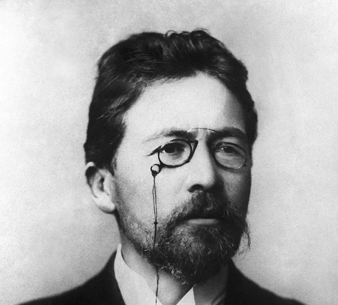
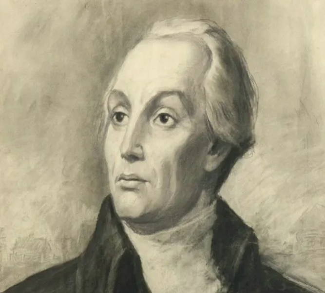
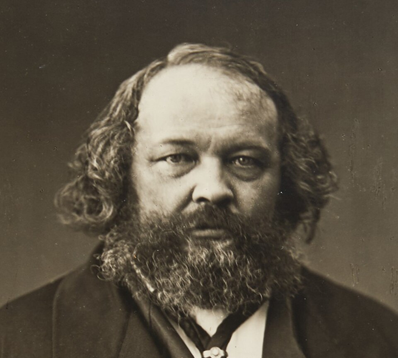
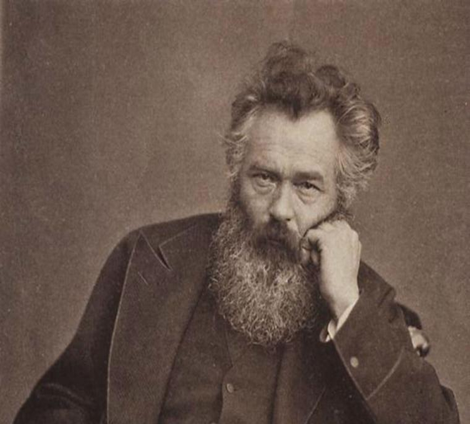
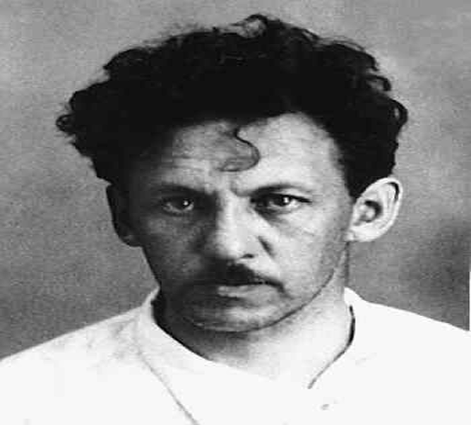

Знаменитые люди Томска
Писатели, учёные и художники, чьи жизнь и творчество связаны с городом на Томи.
Показано 8 персон

Писатель
Антон Павлович Чехов
Великий русский писатель, посетивший Томск в 1890 году.

Драматург
Николай Робертович Эрдман
Автор «Мандата» и «Сказок Пушкина», родился в Томске.

Писатель, мыслитель
Александр Николаевич Радищев
Автор «Путешествия из Петербурга в Москву», ссыльный в Сибирь.

Конструктор
Николай Ильич Камов
Создатель первого в мире синхрофазотрона, уроженец Томска.

Учёный
Владимир Иванович Вернадский
Основоположник геохимии, учился в Томской гимназии.

Философ
Михаил Александрович Бакунин
Революционер и философ, служил в Томском отделении корпуса.

Художник
Иван Иванович Шишкин
Мастер пейзажа, связанный с томским краем.

Художник
Николай Алексеевич Яковлев
Томский живописец, мастер сибирского пейзажа.
Ничего не найдено
Попробуйте изменить параметры поиска